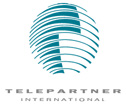

Telepartner International er et norsk/amerikansk programvareselskap som har spesialisert seg innen området kommunikasjonsprogramvare. Våre produkter gir eksterne eller mobile PC-brukere anledning til å koble seg opp mot sentrale ressurser (IBM Stormaskin, IBM AS/400 og LAN-servere). De kan koble seg opp ved hjelp av X.25, direkte oppringt eller trådløst (Mobitex og GSM Data).
Fra vårt kontor i Oslo har Telepartner ansvaret for direkte salg og teknisk støtte i Skandinavia. I tillegg har vi ansvar for indirekte salg gjennom våre distributører og direkte teknisk støtte til disse. Vi har distributører i følgende land; Finland, Tyskland, Frankrike, Benelux, Sveits, Italia, Spania, Singapore, Hong Kong og Australia. I tillegg har vi et datterselskap i England."Remote LAN Access" blir et stadig viktigere produktområde for oss, vi ønsker derfor å knytte til oss en medarbeider for "Produkt- og Kundestøtte - ansvar - Remote LAN Access".
For denne stillingen ønsker vi en medarbeider med følgende bakgrunn og erfaring:
- Relevant utdannelse på høyskolenivå
- 2-3 års arbeidserfaring, gjerne med drift av lokalnettverk
- Kunnskaper innen TCP/IP og andre nettverksprotokoller
- Kunnskaper innen datakommunikasjon i offentlige nett
Vi vil verdsette en medarbedier med eget initiativ, god evne til å håndtere kunder, samt gode samarbeidsegenskaper. Det er en forutseting at engelsk beherskes godt både muntlig og skriftlig. Stillingen vil medføre stor grad av kontakt med våre skandinaviske kunder og våre internasjonale distributører, i tillegg til våre egne kolleger i England og USA.
Telepartner International kan tilby konkurransedyktige betingelser i et trivelig internasjonalt arbeidsmiljø. Vi har mange nye og spennende arbeidsoppgaver å ta fatt på innen et produktområde i sterk vekst.
Spørsmål om stillingen kan rettes til teknisk sjef Per Arnold Raaum eller direktør Nils Petter Liljedahl på telefon 22 73 09 70 eller via e-post. Kortfattet søknad med CV sendes oss snarest. Søknaden merkes;" Remote LAN Access" eller "Selger".
Nedre Skøyen vei 24
Postboks 316 Skøyen, N-0212 OSLO
Telefon: 22 73 09 70, Telefax 22 73 13 10
X.400: S=firmapost; P=Telepartner; A=Telemax; C=no
Internet: Telepartner.firmapost@ccmail.telemax.no